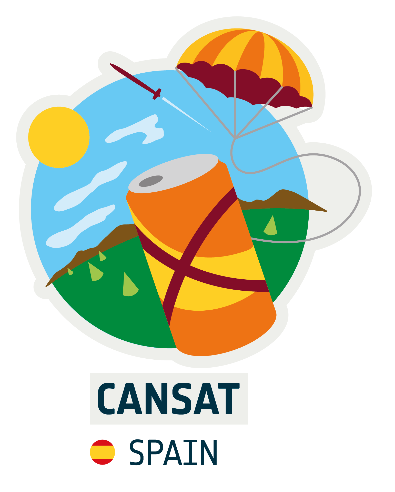
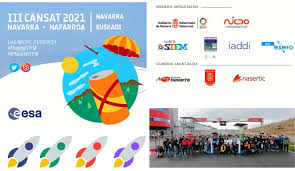

Descripción
El desafío CanSat es una iniciativa de la Agencia Espacial Europea que desafía a estudiantes de toda Europa a construir y lanzar un mini satélite del tamaño de una lata de refresco. Un CanSat es una simulación de un satélite real, integrado dentro del volumen y la forma de una lata de refresco.
El desafío para los estudiantes es adaptar todos los subsistemas principales que se encuentran en un satélite, como la energía, los sensores y un sistema de comunicación, dentro de este espacio tan reducido ¡No olvides incluir el paracaídas! El CanSat debe recuperarse sano y salvo. Cuando el CanSat está listo, se introduce en un cohete, que lanza hasta una altitud de aproximadamente un kilómetro. Entonces comienza su misión. Durante la caída se realiza un experimento científico y / o una demostración tecnológica además de lograr un aterrizaje seguro y analizar los datos recopilados.
Información
La Competición CanSat se realiza a nivel europeo, donde participa un equipo de cada uno de estados miembros de la ESA. Para seleccionar al equipo que representará a nuestro país en la competición europea, contamos con una fase Nacional, en la que participa un equipo de cada Comunidad Autónoma (CCAA).
Las Comunidades autónomas pueden organizar Competiciones Regionales para seleccionar al equipo que les representará en la final nacional.
Plazos: el plazo de inscripción para el desafío CanSat Spain 2023/2024 esta abierto hasta el 24 de noviembre de 2023.